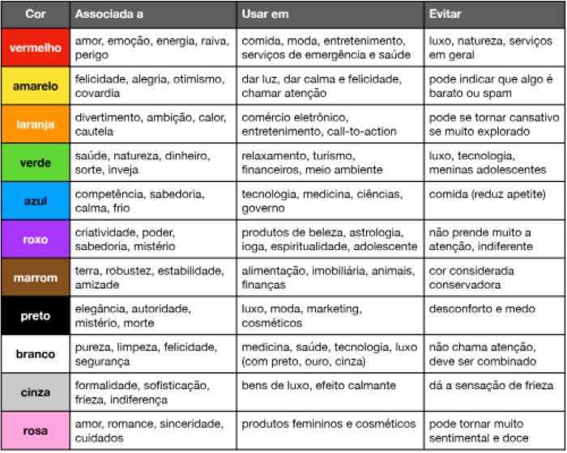

Manual de CSS3
Este site contém dicas sobre CSS3.
Você pode baixar os arquivos que compõem este site para entender como os comandos funcionam.
Por favor utilize somente para estudo.
Para compreender melhor os assuntos falados acesse a página Manual HTML5.
Maneiras de escrever seus códigos CSS
Existem três formas de dar estilo ao seu site:
- Estilos inline
-
Esse modo é mais eficiente para situações pontuais.
Por exemplo: se entre várias tags iguais você quiser mudar uma rapidamente, poderá escrever o parâmetro style e dentro dele dar a configuração desejada.
Obs: você pode colocar quantas configurações quiser dentro desse parâmetro.
Veja isso em prática:
leia com atenção
- CSS locais
-
Essa forma aplica um estilo a todas as tags do tipo selecionado.
Para usá-la você tem que criar uma tag style dentro da tag head e para selecionar os elementos deve dar o nome das tags escolhidas, 'sem colocar entre sinal de maior e menor', e na frente abrir chaves, dentro delas é só colocar as configurações desejadas.
siga o exemplo:
<style>
body{
font: normal 15pt arial;
color: yellow;
background-color: rgb(0, 0, 141);
}
p{
margin-top: 30px;
}
a{
color:white;
}
audio{
margin-top: 10px;
}
dt{
font: bold 17pt arial;
color: rgb(255, 196, 0);
}
<style>
- Estilos externos
-
este é o último modo de se acessar as CSS.
Nele você cria uma tag <link:css>, o parâmetro 'rel' já virá indicando que aquilo é uma 'folha de estilo' e no parâmetro 'href' você indica qual o documento que dará estilo as suas páginas. Você pode utilizar um mesmo documento de estilo para quantas páginas você quiser.
Obs: os nomes deles devem terminar em '.css'
Observe o exemplo:
<link rel="stylesheet" href="style.css">
O modo de se acessar elementos é igual ao último.
Cores
Quando for criar um site se preocupe com as cores, pois elas influenciam fortemente a experiência do usuário use o seguinte gráfico para se guiar nas escolhas de cores, mas não se prenda a ele.

Para selecionar a cor desejada em CSS há três maneiras. Utilizar códigos hexadecimais, usar rgb ou hsl. Veja:
hexadecimal
rgb
hsl
é possível dar transparência as suas cores.
transparência
Se quiser entender mais sobre harmonia de cores acesse o vídeo do curso em vídeo. principalmente entre os minutos 10 e 24.
Para criar uma paleta use o adobe colors
Se precisar extrair alguma cor de um site utilize a extensão ColorZilla do Google Chrome.
Existe uma forma criar degradês em CSS. Ela é usada a partir de uma configuração "background-image" com uma sub configuração "linear-gradiente" dentro dela você indica a direção do gradiente com "to right/left/top ou bottom" e indica a partir de qual cor irá partir por qual vai passar (isso é opcional) e em qual irá parar. Dessa forma:
background-image: linear-gradient(to right, red, white, green, blue);
Tipografia
Além de cores também deve se dar atenção a fonte que você irá usar no seu site.
Existem diferentes medidas de fontes (absolutas: cm, mm, in-"polegada", px, pt, pc; relativas: em=16px, ex, rem, vw, vh, %) as recomendadas pela W3C são os "px" e o "em"
Obs: se quiser representar um número racional use ponto ao invés de vírgula.
Obs: 1px = 0.0625em
Ao aplicar configurações em suas fontes há dois modos.
1°- especificar uma única configuração, exemplo:
font-family: arial, sans-serif;
2°- usar uma shorthand que condensa todas as informações, exemplo:
font: italic small-caps bold 1em arial, sans-serif
Nessa forma é preciso seguir uma ordem (1° - font-style: ex: italic; 2° - font-variant: small-caps; 3° - font-weight: ex: bolder; 4° - font-size: ex: 1em; 5° - font-family: ex: sans-serif.).
Como encontrar e usar as fontes: Use o google fonts e ao selecionar a font escolhida e copie o código @import que aparecer.
Se precisar usar uma fonte baixada use o seletor especial das CSS @font-face{}.
Para achar fontes em imagens use WhatFontIs, Fonts Squirrel ou MyFonts
Ao alinhar um texto use a declaração "text-align" (center, left, right ou justify).
Classes e identificadores
Quando estiver criando um sitre surgirá a necessidade de dar várias declarações há uma única tag dentre várias outras do mesmo tipo. quando isso acontece existem dois parâmetros que reslovem este problema, o parâmetro "id" (identificador) e o parâmetro "class" (classe), a esses parâmetros você da o nome que quiser para poder diferencia-los ao criar um seletor em CSS. Observe um exemplo:
<h1 id="principal">Olá, mundo!<h1>
<h1>Olá, mundo 1!<h1>
<h1>Olá, mundo 2!<h1>
h1{
background-color: white;
}
h1#principal{
color: blue;
}
#principal{
color: blue;
}
As classes funcionam da mesma forma que os IDs. As únicas diferenças entre as duas são:
1 - Não é recomendado aplicar um "mesmo" id a mais de uma tag em um mesmo documento, já para as classes não há problema nisso.
2 - Se as configurações de uma class e um id entrarem em conflito as que vão predominar são as do id, pois ele é mais específico.
3 - para selecionar um id se usa "#" e para selecionar uma class se usa " . "
Obs: Um elemento pode ter mais de uma classe, assim como ele também pode ter um id e fazer parte de uma class.
Pseudo-classes e pseudo-elementos
Em vários momentos será preciso dar uma configuração de estilo para um elemento somente quando ele está em um determinado estado, para isso existem as pseudo-classes.
Modo de usar: coloque a tag que você quer dar estilo, depois coloque dois pontos, por fim coloque o nome da pseudo classe que irá utilizar, vamos usar como exemplo o hover que indica que ao passar o mouse por cima daquele elemento ele terá o estilo que estiver configurado dentro do seletor. Exemplo:
div:hover{
background-color: gray;
}
Com essa configuração quando passarmos o mouse por cima da div ela ficará com o fundo cinza.
Existem diversas pseudo classes cada uma com uma função.
Os pseudos elementos servem para modificar ou adicionar o conteudo do HTML por CSS.
Modo de usar: funciona basicamente da mesma forma que as pseudo-classes só que ao invés de um sinal de dois pontos são dois sinais de dois pontos (o nome dos pseudo-elementos não são os mesmo que os das pseudo-classes). Exemplo:
div::after{
content: 'Este texto vai aparecer em vermelho depois da div';
color: red;
}
O resultado desse código seria a adição (ao fim da div) em vermelho do texto escrito no content (conteudo).
Box model
Toda tag que exibe ou contêm algo em HTML cria uma caixa.
Essas caixas podem ser classificadas em dois tipos:
-
- Block-level
- Quebram uma linha e por padrão ocupam toda a largura do contêiner (caixa que contém um content, conteúdo da caixa, nesse caso a caixa de que estamos falando); se quiser você pode manipular as medidas dela.
-
- Inline-level
- Não quebram a linha e ocupam somente o espaço que precisam; não é possível alterar suas medidas.
As caixas possuem basicamente quatro partes.

-
- Content
- Conteúdo da caixa
-
- Padding
- Espaço vazio até as bordas
-
- Border
- Borda da caixa
-
- Margin
- espaço entre a caixa e as bordas do contêiner e entre as outras caixas.
Para enchergar isso utilize o dev tools.
Obs: todas as partes possuem shorthands para que você possa configurá-las.
exitesm tags que criam box semânticas do tipo block-level. Elas são chamadas de
Groupping Tags algumas são: header (cabeçalho), nav (menu/navegação), main (conteúdo), section (conteúdos relacionados), article (conteúdo periférico, que funciona isoladamente).
É possível criar bordas únicas, veja esse
video para enteder.